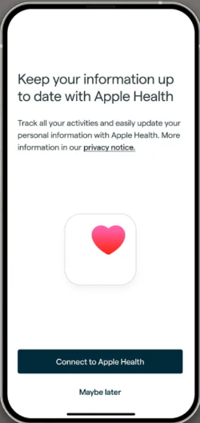

W02 · DAY 0 · 第 1/3 步
关注目标 · 按需授权
页面目标：收集 AI 个性化需要的目标，并以最小范围完成第一次授权。
1
目标最多 2 个，44pt 高的选择胶囊；「先随便看看」允许不选。目标决定步步推荐的微行动。
2
授权以弹层出现：点「下一步」后从底部升起，目标页仍在背后可见，用户不会觉得被打断。参考 Lingo
3
只请求两项，每项写明「用来做什么」，而不是列出权限名称。
4
敏感数据延后：血糖、体重在第一次记录时就地请求，降低首次授权的心理负担。
5
主次按钮：「连接」触发系统健康权限弹窗；「以后再说」直接进入 W03，后续可在「我的」中开启。

参考：Lingo 一屏只请求一项授权，大标题说用途，主按钮「连接」，次按钮「以后再说」。